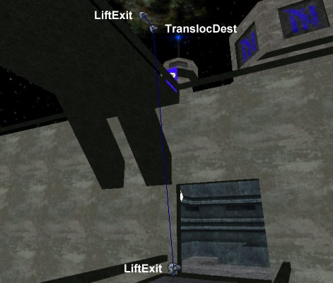

Pathing Translocators
This article discusses how to path translocators for the original Unreal Tournament. To do this in UT200x, just use a JumpSpot. As discussed on the JumpSpot page, the bots in UT200x are smart enough to use the translocator to get to a JumpSpot when necessary.
Pathing Translocators for UT
Pathnoding translocators is very similar to Pathing Lifts. To set up a place for bots to use their translocators, you need to place three actors:
- Place a LiftExit where you want the bot to stand to fire his translocator. LiftExit can be found under NavigationPoint in the Actor Browser.
- Place a TranslocDest where the bot should throw his translocator target. TranslocDest can be found under LiftCenter, which itself is under NavigationPoint.
- Place a second LiftExit near the TranslocDest as an "exit" from this path.
- Finally, you need to indicate that these three actors are related to one another. Choose a descriptive name and set the following properties of your actors to that name:
- LiftExit→LiftTag (for both LiftExits)
- LiftCenter→LiftTag (for the TranslocDest)
The screenshot below shows an example of this from my map CTF-Susurrous.
![[Pathing-Translocators-01]](images/pathing-translocators-01.jpeg) Bots will translocate up this path, and jump down. |
When you set up a translocator path like this, a bot using it will assume that he can walk from the TranslocDest to either of the LiftExits. And in the case shown in the image above, it's true. A bot needs the translocator to get from ground level up to that high ledge, but if he wants to get from the ledge back down to the ground, he can just walk or jump off the side.
However, this won't always be the case in your maps. For example, if you want a bot to use his translocator to cross a wide gap, he won't be able to walk from the TranslocDest back to the original LiftExit. In cases like this, you replace the first LiftExit with a TranslocStart, which is a subclass of LiftExit that indicates to the bot that he must use his translocator in both directions. Here's an example from the same map that shows this:
Bots will translocate along this path in both directions. |
In this case, I wanted bots on the roof of the base to be able to reach the sniper tower directly, instead of having to go find the teleporter that would take them there otherwise. Thus I have a TranslocStart on the roof of the base, and a TranslocDest and LiftExit inside the sniper tower. In addition to using this path to reach the sniper tower, a bot will also throw his translocator from the TranslocDest back to the TranslocStart on the roof and move that way.
There may also come a time when you want a translocator path that can only be followed in one direction; in other words, the bot can't get back to the original LiftExit or TranslocStart at all. For example, you might want to have bots use their translocators to get down from a very high altitude. The usual way to make a path one-way is as follows:
- Select the node from which you only want paths to face in one direction.
- Set the property NavigationPoint→bOneWayPath to True.
- Set the propety Advanced→bDirection to True. This will make an arrow appear pointing away from the node whenever it's selected in one of your 2D viewports.
- Rotate the node so that the arrow points in the direction you want the paths to point. Paths are valid through a 180-degree arc in that direction. In other words, if you imagine a plane passing through the node and perpendicular to the arrow, paths are only valid towards nodes on the same side of the plane as the arrow.
This works fine for other types of nodes, but I've had some trouble getting it to work with LiftExits and TranslocDests. An alternate solution is to place the TranslocDest such that a bot can't walk to it; that way he'll ignore it and find another path. The screenshot below shows an example from my map.
![[Pathing-Translocators-03]](images/pathing-translocators-03.jpeg) The TranslocDest is about 350 UUs above the ground. |
Here I needed a way for a bot to escape the sniper tower and move directly towards the center of the map, without needing to take the longer route through the teleporter I've got up there, so I created a translocator path from the sniper tower to the ground. However, even with all three nodes set as one-way paths, I still noticed the bots trying to reach the sniper tower directly from the ground, and it's much too high for that to be possible. Thus, I raised the TranslocDest and LiftExit above the ground a little so bots couldn't walk to it, but not so high that bots would take damage falling from it. After doing so, they used the path without any problems.
One more thing you should be aware of: if you set your translocator points in such a way that translocation is not possible, for example if the TranslocDest is ridiculously high off the ground, the bots will try to use it anyway, so make sure you test these things out. One problem I've encountered is that bots often seem to mess up if you try to give them a path that's too close to being vertical. Below is a screenshot where I wanted bots to translocate from one bridge up to another.

Don't make paths too steep! |
Now, it's kind of a tricky translocation as the bridges' heights are relatively far apart, so I thought, "Well, the closer to vertical you throw a translocator, the more height you'll get out of it." Right? That makes sense to you and me, but apparently bots don't agree. In the configuration you see above, my bots would throw the translocator, and it would hit the side of the bridge and bounce off. Then the bot would translocate up into midair, fall back down, and try again ad infinitum. It was amusing to watch for awhile, but it's not something you want in the final version of your map. I found that if I backed the bottom LiftExit up a bit, so the path's angle above the horizon was not quite so great, they were able to use the path with ease. A human player might find it difficult to fire the translocator exactly right from that position, but the bots will get it every time.
Related Topics
- Bot Support – Main topic
- Bot Pathing – Concepts and elements of the bot path network
- Basic Bot Pathing – A tutorial on basic bot pathing
- Bot Pathing – Concepts and elements of the bot path network
- Translocator
- JumpSpot
- LookTarget
Discussion
SuperApe: This page appears out of date. The UT200x method of getting bots to aim appropriately with the translocator is with a JumpSpot, not a LiftExit. Another method uses a LookTarget. I'm referring directly to [Blitz's Advanced Bot Pathing Tutorial].
Ironblayde: You're absolutely right; this was written for UT99, and it's quite different in later games. Should we perhaps rename this page to "Pathing Translocators (UT)" and then use the regular "Pathing Translocators" page to set down the methods for UT200x?
SuperApe: Well, the (UT)/(UT200x) notation is really more for class pages. I think since this is just a "how to" page, perhaps this page could just be divided into two sections. (*waves at Ironblayde*) 
Birelli: I wrote up how to path UT2004 translocators from Steve Polge's article on JumpSpot, a simple note at the top of this saying "This is for UT, for pathing translocators in UT2004 just use a JumpSpot"...I'm going to put that in.
SuperApe: It sounds like more from Blitz's tut (like the LookTarget stuff) could be included as well. Perhaps just a little more info could be included in a separate level 2 heading for UT200x.
Category To Do – Update for UT200x with the comments made above in Discussion.